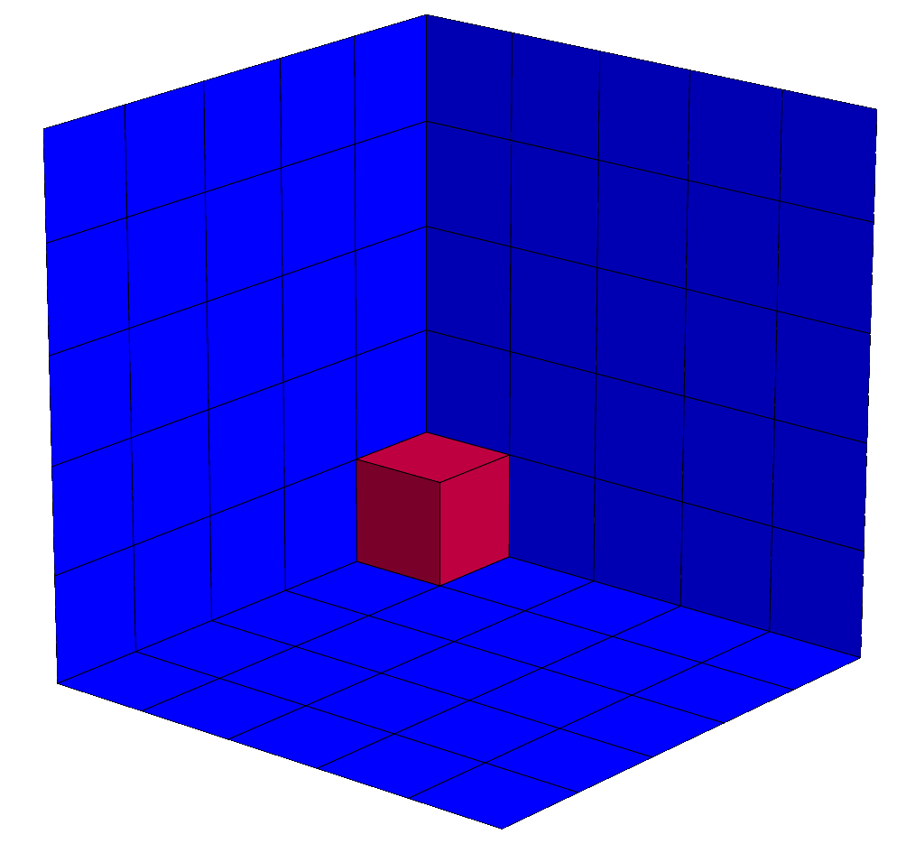

About & Research Interests
My recent research focuses on the Eisenbud-Green-Harris (EGH) conjecture, Lefschetz properties, and the structure of generic initial spaces in the presence of regular sequences.
Previously, I worked on discrete isoperimetric problems. I remain very interested in discrete isoperimetric problems and continue to use them extensively in my current research.

Publications & Preprints
- (2026). "On the Structure of Generic Initial Spaces". In preparation.
- (2026). "Constructions of Macaulay posets and Macaulay rings". Electronic Journal of Combinatorics, 33.2, Paper No. 2.52, 40 pp.
- (2025). "The Macaulay Posets package for Macaulay2". Accepted to Journal of Software for Algebra and Geometry.
- (2025). "Towards a Complete Local-Global Principle". Order.
- (2025). "Macaulay posets and rings". Journal of Algebraic Combinatorics, 62.4, Paper No. 54, 42 pp.
- (2024). "Reflect-push methods part I: two dimensional techniques". Electronic Journal of Combinatorics, 31.1, Paper No. 1.55, 47 pp.
- (2023). "Pull-push method: a new approach to edge-isoperimetric problems". Discrete Mathematics, 346.12, Paper No. 113632, 21 pp.
- (2018). "New infinite family of regular edge-isoperimetric graphs". Theoretical Computer Science, 721, pp. 42–53.